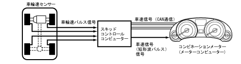

| Speed Sensor |
| ● |
The skid control computer converts the wheel speed pulse signals of 48 pulses per 1 tire revolution output from the speed sensors installed on each wheel into a vehicle speed signal and sends it to the combination meter via CAN communication. At the same time, to output the vehicle speed signal to computers, etc. that do not support CAN communication, the skid control computer converts the wheel speed pulse signals into a vehicle speed rectangular wave pulse signal equivalent to 4 pulses per 1 revolution of the transmission rotating shaft and outputs it to the combination meter.
|
 Labels in this picture: Wheel Speed Sensor 車輪速センサー Vehicle speed signal (CAN communication) 車速信号（CAN通信） Wheel speed pulse signal 車輪速パルス信号 Skid Control Computer スキッドコントロールコンピューター Vehicle speed signal (rectangular wave pulse) 車速信号（矩形波パルス） Combination Meter (Meter Computer) コンビネーションメーター（メーターコンピューター） |